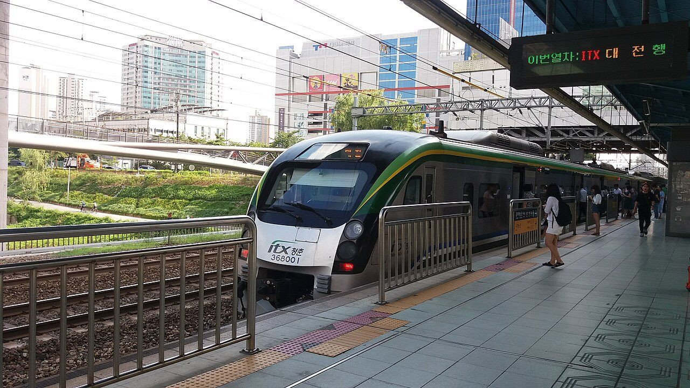
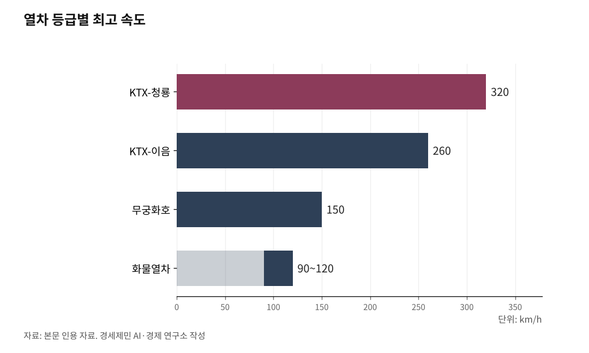

[127년 한국철도④] 모두가 고속일 필요는 없다… 속도도 값도 등급으로 갈라야 산다
KTX-청룡 320·KTX-이음 260·화물 90~120km, 한국 철도는 이미 속도가 갈렸다
2009년 선로등급제를 없앴더니 너도나도 고속으로 쏠렸다
제5차 건의 650조는 예산의 16배… 모두에게 고속은 불가능하다
14년 묶인 KTX 요금, 갈린 속도엔 갈린 값을 매겨야 한다
AI경제저널=김갑봉 기자 | 인하대 해양AI융합센터 김갑봉 연구교수(물류학)│2024년 5월, 시속 320km 신형 고속열차 KTX-청룡(Korea Train eXpress)이 경부선과 호남선에 올랐다. 그러나 모든 철도가 이 속도로 달리지는 않는다. 같은 국가 철도망 안에서 어떤 선로는 시속 300km로, 어떤 선로는 150km로 달린다.

속도는 이미 갈려 있다. 문제는 둘이다. 계획은 자꾸 모두 고속으로 쏠리고, 요금은 14년째 한 값에 묶여 있다. 노선마다 수요에 맞춰 속도를 등급으로 나누고, 그 등급 위에 값을 다르게 매기는 것. 그것이 한정된 예산으로 더 넓은 망을 까는 길이다. 3편이 다극을 잇는 다중심 망을 말했다면, 4편은 그 망 위에 속도와 값을 어떻게 나눌지를 다룬다.
속도는 갈렸는데, 등급을 없앴다
한국 철도는 한 가지 속도로 달리지 않는다. 같은 국가 철도망 안에서도 노선은 시속 300km 전용 고속선과 200~250km급 준고속선, 그 아래 일반선으로 갈린다. 경부·호남고속선이 앞의 것이라면, 중앙선에는 준고속열차가 달린다.
차량도 갈렸다. 고속 KTX-청룡은 시속 320km, 준고속 KTX-이음은 260km로 달리고, 화물열차는 90~120km에 그친다. 속도의 분화는 구호가 아니라 이미 깔린 현실이다.
이 분화를 본래 떠받치던 제도가 있었다. 노선마다 속도와 규격을 가르는 선로등급제다. 옛 국유철도건설규칙은 노선을 1급선부터 4급선까지 나눠 운행속도와 규격 기준을 등급마다 달리 정했다. 이 급선 체계는 2009년 사라졌다. 국토해양부가 철도를 고속화하고 경제적으로 설계하려고 철도건설규칙을 전부 개정하면서 급수를 없앴다.
취지는 옳았다. 노선마다 설계속도를 형편에 맞게 정하라는 뜻이었다. 그러나 등급을 없앤 자리에 들어선 것은 너도나도 고속이었다. 속도를 자유롭게 정하라고 하자, 지역마다 최고속을 좇았다.
그래서 지금 필요한 것은 옛 급선의 부활이 아니다. 설계속도를 수요에 맞춰 배정하는 계획의 규율이다. 등급은 사라졌어도, 등급의 논리는 되살려야 한다.

고속은 비싸다, 밀도가 답이다
속도를 높일수록 철도는 비싸진다. 빠른 열차는 곡선을 크게 돌아야 하므로 산을 더 뚫고 길을 더 곧게 내야 한다. 더 긴 터널과 더 큰 교량이 그래서 든다. 설계속도가 시속 350km를 넘으면 콘크리트궤도를 깔고, 평택~오송에 들어가는 한국형 열차제어시스템(KTCS-2) 같은 고급 신호까지 얹는다. 속도 한 칸이 시설 전체를 끌어올린다.
그래서 모든 노선을 시속 300km로 까는 것은 예산 낭비다. 수요가 얇은 지방 결절에 초고속 전용선을 깔면, 비싼 시설을 지어 놓고 열차도 승객도 드문 길이 된다. 빠름은 공짜가 아니다.
열쇠는 밀도의 경제다. 철도는 선로와 신호, 역에 드는 고정비가 크다. 한 노선에 열차와 승객이 많이 몰릴수록 그 고정비를 더 많은 이용자가 나눠 져, 한 명을 더 실어 나르는 비용이 낮아진다.
그러므로 투자는 수요가 두꺼운 축에 몰려야 산다. 얇은 축에 초고속을 깔면 고정비를 떠받칠 수요가 없어 비싼 빈 길이 된다. 3편이 말한 다중심 망이 결절마다 환승을 모으는 것도, 흩어진 수요를 한데 묶어 이 밀도를 살리는 설계다. 속도를 나누는 일과 망을 채우는 일은 한 몸이다.
정부 계획에도 이 논리가 들어 있다. 국토교통부는 경부 축의 병목인 평택~오송 구간을 국내 처음으로 시속 400km 설계의 2복선으로 짓는다. 이 구간 하루 선로용량은 190회에서 380회로 두 배가 된다. 가장 두꺼운 축이라 초고속에 큰돈을 들였다.
반면 김천과 거제를 잇는 남부내륙철도는 시속 250km급 단선으로 짓는다. 둘 다 고속 사업이지만 축의 두께가 속도와 규모를 갈랐다. 모든 노선에 같은 속도를 욱여넣지 않는 것, 그것이 선로등급제의 실제 모습이다.
14년 동결이 부채 22조를 키웠다
투자만이 아니다. 값도 갈라야 한다. 그런데 KTX 운임은 2011년 11월 3.3% 인상을 끝으로 14년 넘게 동결됐다. 서울~부산 일반실 5만9800원은 그 뒤로 한 자리도 바뀌지 않았다.
같은 기간 다른 값은 모두 올랐다. 최저임금은 2011년 시간당 4320원에서 2025년 1만30원으로 132% 올랐고, 코레일이 무는 전기요금도 크게 뛰었다. 명목 동결은 경제학으로 보면 실질 인하다. 둘레의 값이 다 오르는 동안 운임만 그대로였다면, 실질 운임은 그만큼 떨어진 셈이다.
다른 나라에 견줘도 KTX는 싸다. 일본 신칸센은 도쿄~신오사카 약 550km 지정석을 1만4000엔대, 우리 돈 약 14만원에 판다. 그보다 짧은 서울~부산은 그 절반에도 못 미친다.
운임을 묶는 사이 코레일 재정은 빠르게 나빠졌다. 코레일 누적 부채는 2024년 말 21조원을 넘었고 2025년에는 22조원대가 될 전망이다. 부채비율은 265%(2024년), 하루 이자만 약 11억원이다.
더 큰 짐은 차량이다. 2004년 들여온 KTX-1 46편성은 2030년대 초면 수명이 다해 모두 바꿔야 한다. 코레일은 후속 차량(EMU-320)의 1차 발주를 2027년에 잡았고, 교체 비용만 약 5조원으로 본다. 값을 못 올린 채 빚으로 메우면 안전 투자가 뒤로 밀린다.
그래서 코레일은 2025년 운임 17% 인상안을 내놨다. 적용하면 서울~부산이 7만원선이 된다. 다만 시점은 정하지 못했다.
갈린 속도엔 갈린 값을
문제는 올리느냐 마느냐만이 아니다. 어떻게 나누느냐다. 한국 철도는 이미 속도가 갈렸는데, 속도가 다른 열차의 값 차이는 그만큼 또렷하지 않다. 같은 값으로 다른 속도를 파는 셈이다.
해외는 속도와 서비스에 값을 맞춰 여러 층으로 나눴다. 독일은 시속 300km 고속열차 ICE(인터시티익스프레스)에 프리미엄 값을, 재래선을 시속 200km로 달리며 더 많은 역에 서는 IC(인터시티)에 중간 값을 매긴다. 프랑스는 한층 더 갈랐다. 고속선 고급형 TGV 인위(inOui), 같은 고속선을 쓰되 외곽역에 서고 서비스를 줄인 저가형 위고(Ouigo), 재래선 중속의 인터시테(Intercités)로 세 갈래다. 원리는 하나다. 빠르고 편한 열차는 비싸게, 느리고 단출한 열차는 싸게 판다.
값을 한 번에 크게 올리기는 어렵다. 그래서 차등이 먼저다. 속도와 등급, 시간대로 값을 나누면 평균 인상 없이도 재정과 형평을 함께 손본다. 마침 통합이 그 기회다. KTX와 SRT는 2026년 말 완전 통합을 목표로 단계를 밟고 있다. 시범 교차운행이 2026년 2월 시작됐고, 5월부터 두 열차를 잇는 중련운행으로 넓어졌다. 통합 과정에서 정부는 환승 할인과 취소 수수료 면제 같은 혜택을 내놓아 이용 부담을 더는 쪽이지만, 중장기 재정 압박은 그대로다. 코레일 사장도 붐비는 시간대 값을 올리는 탄력 요금을 함께 검토하겠다고 했다. 똑같은 값으로 다른 속도, 다른 시간을 파는 것이야말로 불공평하다.
등급을 매겨야 16배를 감당한다
왜 등급인가. 돈이 한정됐기 때문이다. 제5차 국가철도망 구축계획에 전국 지자체가 건의한 사업은 약 650조원으로, 반영 가능한 예산 40조원의 16배에 이른다. 건의는 너 나 없이 우리 지역에도 고속철도를 깔아 달라는 것이다. 모두에게 고속을 줄 수는 없다.
길은 등급을 매기는 데 있다. 수요를 재어 두꺼운 축은 고속으로, 얇은 축은 준고속이나 일반으로 배정하고, 같은 원리로 빠른 열차와 한산한 시간대에 제값을 매긴다. 그러면 같은 예산으로 더 넓은 망을 깔고, 운임을 한꺼번에 흔들지 않고도 재정 부담을 던다. 속도는 목적이 아니라 수단이다. 빠를수록 좋은 것이 아니라, 수요에 맞을수록 좋다.
값과 속도를 다듬어도 남는 것이 있다. 22조원 부채와 자연독점이라는 철도 재정의 구조다. 다음 편에서 이를 짚는다.
※ 이 기사는 AI 프로그램 클로드를 활용해 작성했습니다.
참고문헌
· "철도의 건설기준에 관한 규정", 국토교통부(국가법령정보센터), https://www.law.go.kr/LSW/admRulLsInfoP.do?admRulSeq=2100000216862
· "철도의 건설기준에 관한 규정(국토해양부 고시 제2009-832호)", 국토해양부, 2009.9.1., https://www.codil.or.kr/filebank/moct2014//202007/MOCT2293_2.PDF
· "시속 320km 신형 고속열차 KTX-청룡, 내달 1일 첫 운행", 철도경제신문, 2024.4., https://www.redaily.co.kr/news/articleView.html?idxno=7652
· "포화상태 이른 '평택~오송' 구간, 46.9km 고속철도 건설", 정책브리핑(국토교통부), 2023.6.7., https://www.korea.kr/news/policyNewsView.do?newsId=148915978
· "평택∼오송 2복선화 건설사업 기본계획 고시(설계속도 400km/h, 선로용량 190→380회)", 국토교통부(KDI 경제정보센터), 2021.6.30., https://eiec.kdi.re.kr/policy/materialView.do?num=215479
· "'GTX 더 깔리나'…3기 신도시發 노선 확대 논쟁(예산 40조 대 요구 650조)", 시사저널e, 2026.4.20., https://www.sisajournal-e.com/news/articleView.html?idxno=420608
· "김천-거제 잇는 250km/h 고속철, 남부내륙철도 착공식", 철도경제신문, https://www.redaily.co.kr/news/articleView.html?idxno=15579
· "고용량 이단적재 화물열차 국내 최초 개발", 한국철도기술연구원.
· "한국철도통계", 한국철도공사.
· "서울·부산 KTX 요금 7만원 되나···코레일 '운임 17% 인상 추진'", 경향신문, 2025.3.25., https://www.khan.co.kr/article/202503251700001
· "코레일 부채 22조원…전기료 140% 오르는 동안 운임은 동결", 농민신문, 2025.2.18., https://www.nongmin.com/article/20250218500274
· "(2025 국감) 코레일 부채 21조원 돌파…하루 이자만 11억원", 전자신문, 2025.10.29., https://www.electimes.com/news/articleView.html?idxno=361218
· "코레일 사장 '15년째 요금 동결에 재무 압박 커, 인상 논의 불가피'(종합)", 뉴시스, 2026.5.17., https://www.newsis.com/view/NISX20260517_0003632904
· "사업비 5조, '16칸 EMU-320' 도입… 내년 첫 발주 [노후 KTX-1 교체]", 철도경제신문, 2026.4.7., https://www.redaily.co.kr/news/articleView.html?idxno=16135
· "둘로 쪼개진 고속철도 하나 된다…국토부 'KTX-SRT 통합, 내년 말 마칠 것'", 프레시안, 2025.12.8., https://www.pressian.com/pages/articles/2025120815220735017
· "SRT 서울역·KTX 수서역 출발…고속철도 교차운행 25일부터 본격 시행", 한국철도일보, 2026.2., https://www.korearailroad.kr/news/articleView.html?idxno=113245
· "2025년 적용 최저임금 시간급 10030원", 고용노동부(정책브리핑), 2024.8.5., https://www.korea.kr/briefing/pressReleaseView.do?newsId=156644351
· "Intercity (IC) Long-distance trains", Deutsche Bahn, https://int.bahn.de/en/trains/long-distance-trains
· "Loi du 27 juin 2018 pour un nouveau pacte ferroviaire", Légifrance, https://www.legifrance.gouv.fr
· "도카이도·산요 신칸센 노조미 안내", JR도카이(JR Central), https://global.jr-central.co.jp/ko/nozomi/
사진 출처
· [대표사진] Aspere, "ITX Cheongchun in Sindorim.jpg", 위키미디어 공용, CC0, https://commons.wikimedia.org/wiki/File:ITX_Cheongchun_in_Sindorim.jpg
※ 이 기사는 인공지능을 활용해 작성했습니다.
관련기사
- [127년 한국철도⑤] KTX 속도 따라 요금 현실화… 무궁화 늘려 선택권 보장
- [127년 한국철도-번외] 외국인 606만명 이용, 국제공항을 고속철도로 잇자
- [127년 한국철도③] 서울 가는 길은 넉넉하다… 이젠 지방끼리 잇는 망
- [127년 한국철도②] 탄소배출 자동차 대비 13% 철도로 모달시프트할 때
저작권자 © AI경제저널 무단전재 및 재배포, AI학습 및 활용 금지